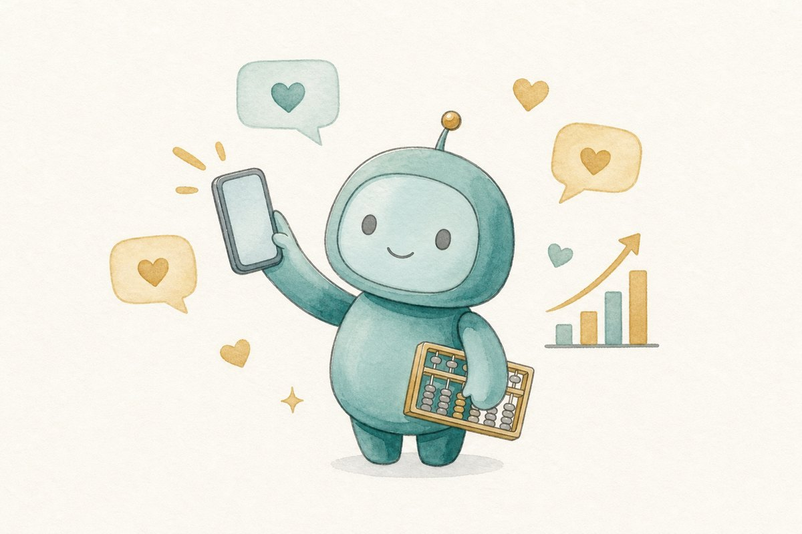
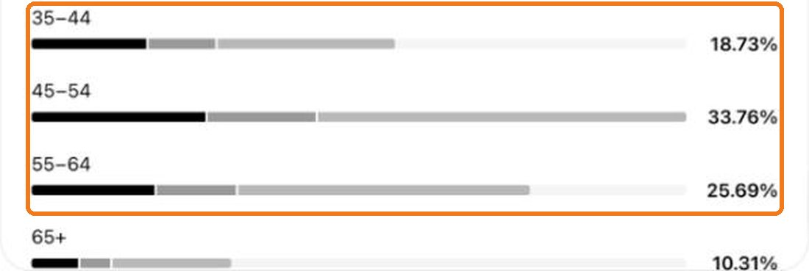
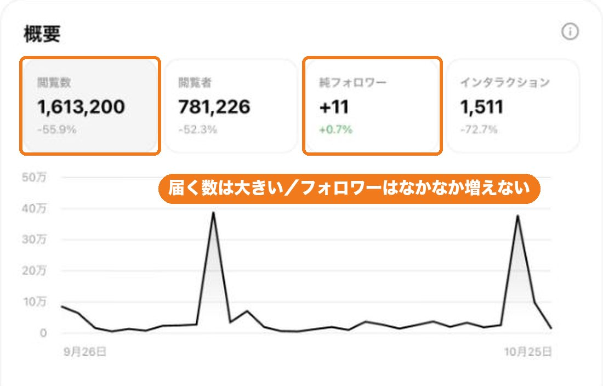
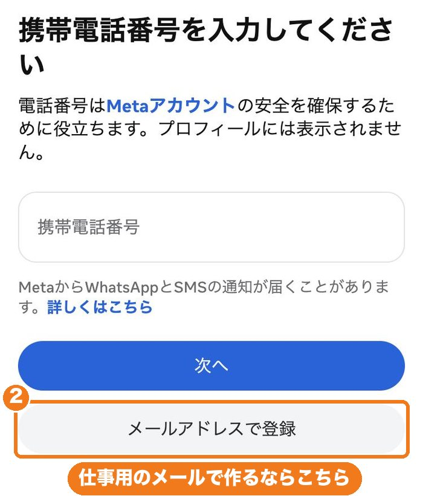
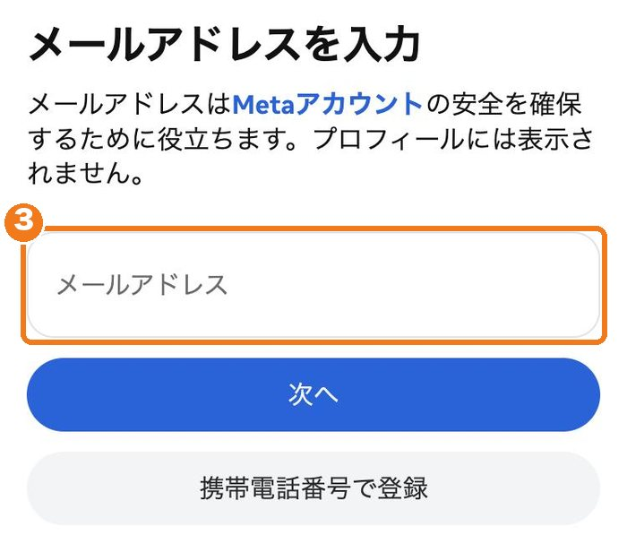
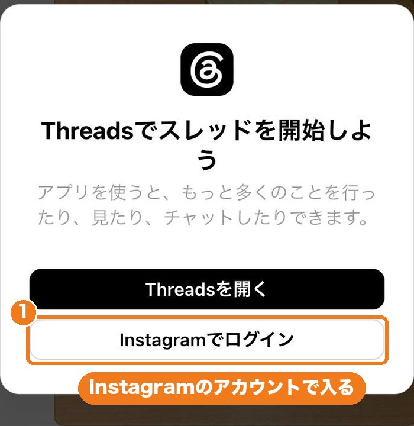
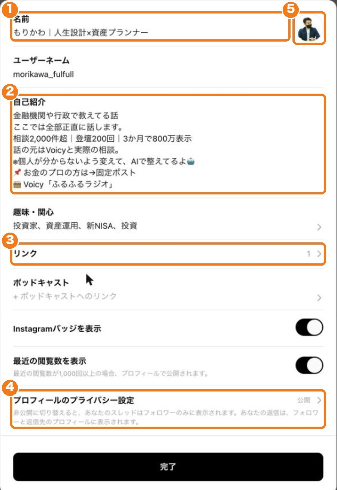

発信のはじめかた
先週までに作った「記事」と「画像」を、外に出す場所をつくります。
- 自分の名前と役割が入ったプロフィール
- プロフィール画像
- そのまま出せる投稿案が3本
見本です（名前・文は例）。あなたの「選ばれる理由」から、当日いっしょに作ります。
✓前もってやる準備（20分）
アカウント作りとプロフィール文は、作業会で一緒にやります。前もってやるのは、この7つだけです。
- ✓このページの「1」〜「3」をざっと読む「当日やること」は29日に一緒に見ます。今は開かなくてOK5分
- ✓Instagramのアカウントがあるか確かめるあるなら、私用か仕事用か1分
- ✓スマホに「Threads」と「Instagram」のアプリを入れるアプリを入れるパスワードが分からなければ、当日でOK5分
- ✓会社のルールを確かめる相手に、すぐ下の質問を送っておく会社員の方は会社に、代理店の方は保険会社か代理店の管理者に。返事は待たなくてOK。送る相手が分からなければ、相手を決めるだけでOK（29日に一緒に確認します）3分
- ✓プロフィール画像の候補を1枚、スマホに保存する自分の写真か、週3の画像3分
- ✓週1の「選ばれる理由」3つを、スマホのメモに入れる週1の章を開く2分
- ✓私用と分けたい人だけ：仕事用のメールアドレスを控えておく1分
当日の持ち物
チェックは、このスマホ（パソコン）の中だけに残ります。
Q準備の4番：会社に送る質問
お金のしくみや考え方の話は、多くの会社で発信できます。ただ、商品を勧めたり比べたりすると「募集」になり、承認が要ります。代理店の方も、委託先の保険会社のルールに従います。
下のボタンで、5つの質問をまとめてコピーして、メールやLINEにそのまま貼れます。
- 個人のSNS（Threads・note）で、お金や保険の一般的なしくみを発信してもよいですか。届け出や事前の確認は要りますか。
- プロフィールに、会社名・募集人であること・資格を書いてもよいですか。書いてはいけない言い方はありますか。
- 商品名や保険料に触れたい場合、事前承認（募集文書の番号）の手続きはどうなっていますか。
- プロフィールに相談の窓口（診断ページ・LINE公式）を置いてもよいですか。お客様とのやりとりに、記録や保存のルールはありますか。
- SNS運用の社内規程やマニュアルがあれば、いただけますか。

返事が来る前でも、29日はアカウント作りとプロフィールまで進められます。投稿は、確かめてからで大丈夫です。
1なぜ、発信の場所がいるの？
この講座では広告を使いません。だから、お客様と出会う「無料の入口」が必要です。
強み（週1）→ 記事（週2）→ 画像（週3）と作ってきました。外に出して、はじめて誰かに届きます。
Threadsは「反応を見る場所」。相談の入口は、週6で公開する診断ページとLINEです。役割を分けておくと、がっかりしません。
2森川のThreadsの、本当の数字
ふるふる（森川）のThreadsの、直近30日の実際の数字です（2026年10月26日時点）。

読んだ78万人のうち、もともとのフォロワーは413人。ほとんどが、まだ森川を知らない人です。
でも、弱みもあります
読まれる数のわりに、フォロワーは30日で11人しか増えていません。投稿の中のリンクも、ほとんど押されていません。Threadsは「読んで、反応して、流れていく」場所だからです。

だから、この講座では「読まれた数」より、この4つを数えます。
- プロフィールを見た
- リンクを押した
- 診断を最後までやった
- LINEに登録した

森川もまだ、この4つを伸ばしている途中です。1期のみなさんと一緒に、数字で確かめていきます。
3媒体は、まずThreadsひとつ
全部やろうとすると、続きません。最初はThreadsだけ。ほかは講座の後半か、卒業してからで大丈夫です。
Threads 最初の主役
文章が中心の、会話の場。日本で伸びています。フォロワーがいなくても届きやすく、反応が早い。毎日1〜3投稿と、返信が大事。リンクは押されにくいので、プロフィールで道をつくります。
note あとで：記事の置き場
長い記事で信頼をつくる場所。検索やAIからも人が来ます。週2の記事を置く倉庫として、2週に1本で十分。週8〜週10でやります。
ほかの5つの媒体（今はやらなくてOK）Instagram・Facebook・YouTube・X・TikTok
Instagram Threadsのあとで
40代の約7割が使っています。女性に強い。写真や画像づくりが要り、投稿の文中のリンクは押せません。Threadsを作るのにアカウントは使います。
Facebook 今の人脈向け
40〜50代の3〜4割。実名の知り合いや、紹介とのつながりに向きます。新しい人には届きにくいので、近況報告くらいで。
YouTube 卒業してから
40代の9割が見ています。信頼はいちばん強い。でも撮影と編集が重いので、卒業してからの宿題に。
X（旧Twitter） 今はやらない
広がるのは速いけれど、言い合いになりやすく、お金の話は荒れがち。最初はやらなくて大丈夫です。
TikTok 今はやらない
10〜20代が中心。保険・お金の相談をする客層とずれるので、最初はやらなくて大丈夫です。
年代別の利用率（参考）
| 媒体 | 全年代 | 40代 | 50代 |
|---|---|---|---|
| YouTube | 81.5% | 91.6% | 84.9% |
| 54.8% | 67.1% | 54.4% | |
| X | 44.7% | 57.0% | 40.2% |
| TikTok | 36.7% | 42.6% | 32.2% |
| 27.0% | 38.9% | 33.1% |
出典：総務省 情報通信政策研究所「令和7年度 情報通信メディアの利用時間と情報行動に関する調査」。Threadsとnoteは、この調査の項目にありません（そのため上の森川の数字を見てください）。
4当日やること（今は開かなくてOK）
29日の作業会で、画面を見ながら一緒にやります。先に見ておきたい人だけ、開いてください。
A. Threadsの作り方Instagramで登録して、Threadsに入る
Threadsは、Instagramのアカウントで入るのがいちばん迷いません。私用のInstagramと分けたい人は、仕事用のメールで新しく作ります。
- Instagramのアプリを開き、「新しいアカウントを作成」を押す
- 携帯番号か、メールアドレスを入れる（私用と分けたいなら、仕事用のメールで）
- 届いた数字（確認コード）を入れる
- パスワード・生年月日・名前を入れる（名前の例：森川｜お金の相談）
- ユーザー名を決める（半角の英字・数字・「.」「_」だけ。あとで変えられます）
- Threadsのアプリを開き、「Instagramでログイン」を押して、作ったアカウントを選ぶ
- 公開の範囲は「公開プロフィール」を選ぶ



・確認コードが届かない → 1分待って「再送信」。それでもダメならメールで登録し直す
・作りたてで、たくさんフォローしたり続けて投稿したりすると、一時的に止められることがあります。初日はプロフィールを整えて、投稿は1本まで
B. プロフィールの作り方名前・自己紹介3行・画像・リンク
名前は「名前｜役割」
例：森川｜人生設計×資産プランナー。何の人かが、ひと目で分かるようにします。
自己紹介は、3行の型で（150字以内）
当日は、判断基準集の「右腕③」で、週1の「選ばれる理由」から3案を出して、いちばん自分が言いそうなものを選びます。商品名・会社名・実績の数字は入れません。

プロフィール画像
自分の写真か、週3の画像スキルで作った絵のどちらかで大丈夫。顔を出すかどうかは、自分で決めてください。画像スキルなら「Threadsのプロフィール画像。正方形で、文字は入れないで」と頼みます。
リンク
リンクは5本まで置けます。週6で、1本目に診断ページを入れます。当日は場所を確かめるだけです。
商品名・保険料・「○○保険がおすすめ」／根拠のない「No.1」「業界初」／会社名やロゴ（会社のルールで決まっている人以外）
Threadsを作って、プロフィールを整えて、投稿案を3本。出せる人は、自己紹介を1本。
スマホでThreadsを操作しながら、パソコンのZoomで一緒に見ます。